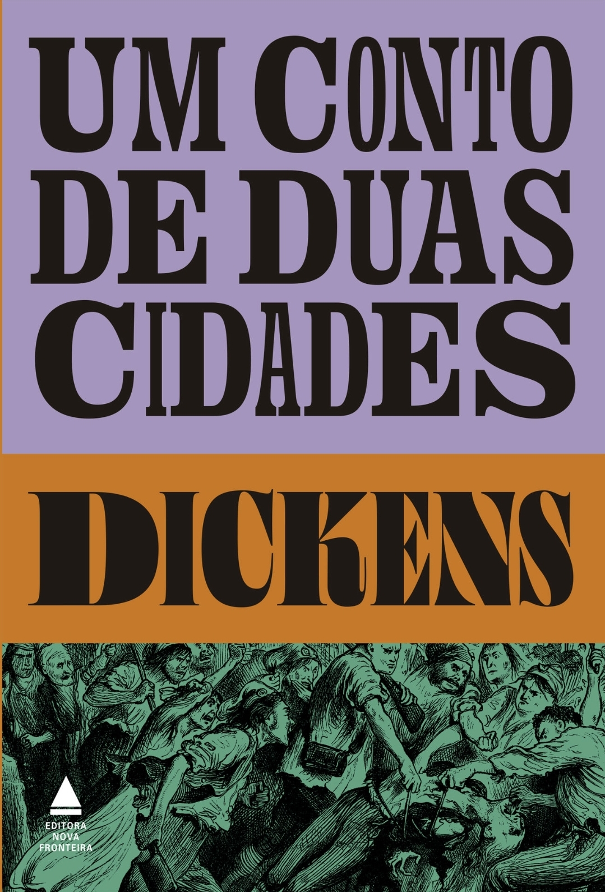
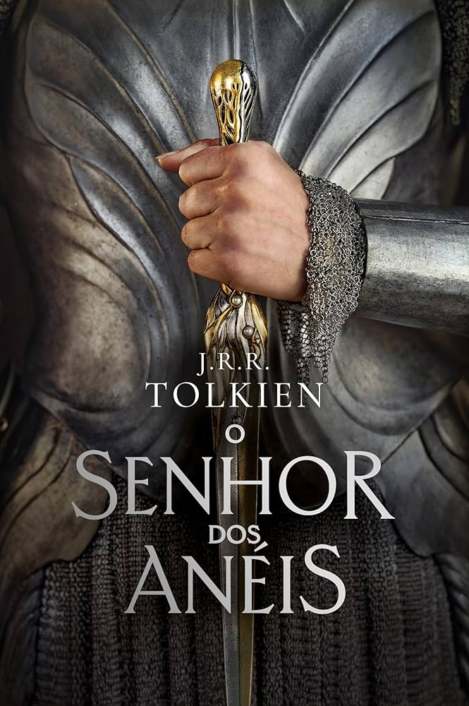
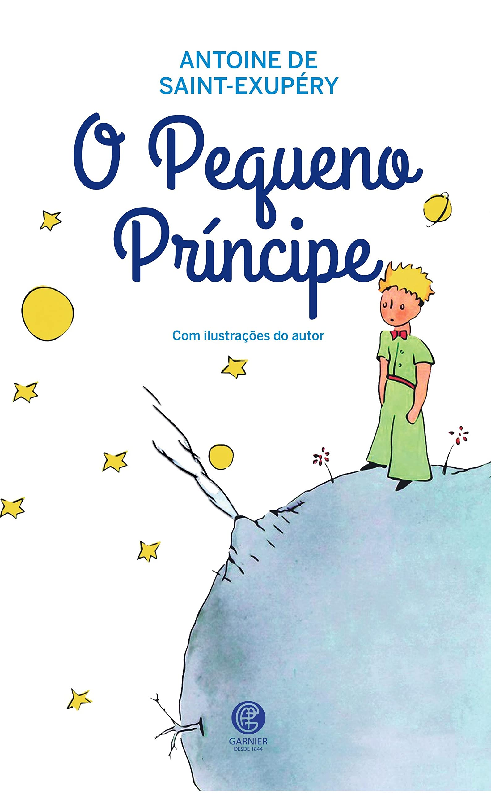
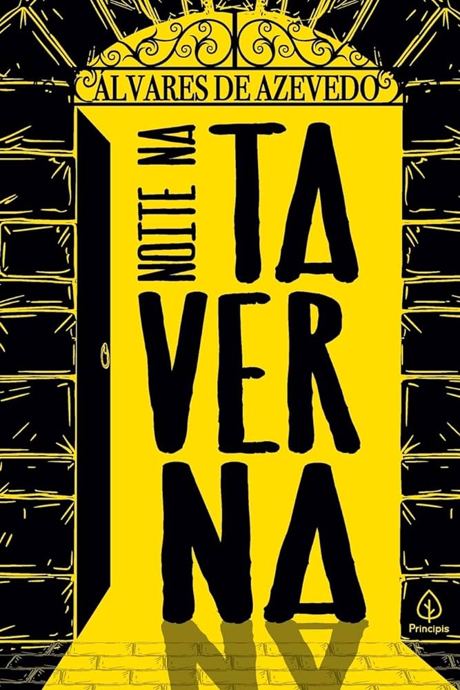
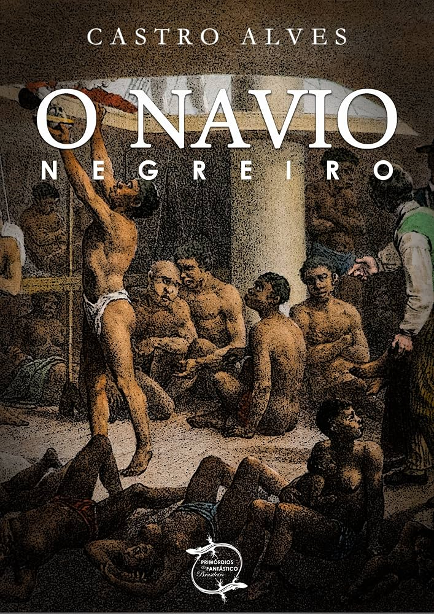
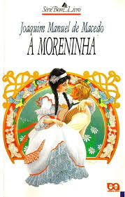

| Livros Estrangeiros | Literatura Brasileira | ||||
|---|---|---|---|---|---|
|  |  |  |  |  | |
| Um Conto de Duas Cidades Charles Dickens Emprestado |
O Senhor dos Anéis J. R. R. Tolkien Emprestado |
O Pequeno Príncipe Antoine de Saint-Exupéry Emprestado |
Marília de Dirceu Tomás Antônio Gonzaga Emprestado |
Noite na taverna Álvares de Azevedo Emprestado |
O navio negreiro Castro Alves Emprestado |
| Famosos do TikTok | Vestibular | ||||
|  | |||||
| As Coisas que Deixamos Para Trás Lucy Score Emprestado |
Aconteceu Naquele Verão Tessa Bailey Emprestado |
Mil beijos de garoto Tillie Cole Emprestado |
Grande Sertão: Veredas Guimarães Rosa Emprestado |
A moreninha Joaquim Manuel de Macedo Emprestado |
Vidas Secas Graciliano Ramos Emprestado |